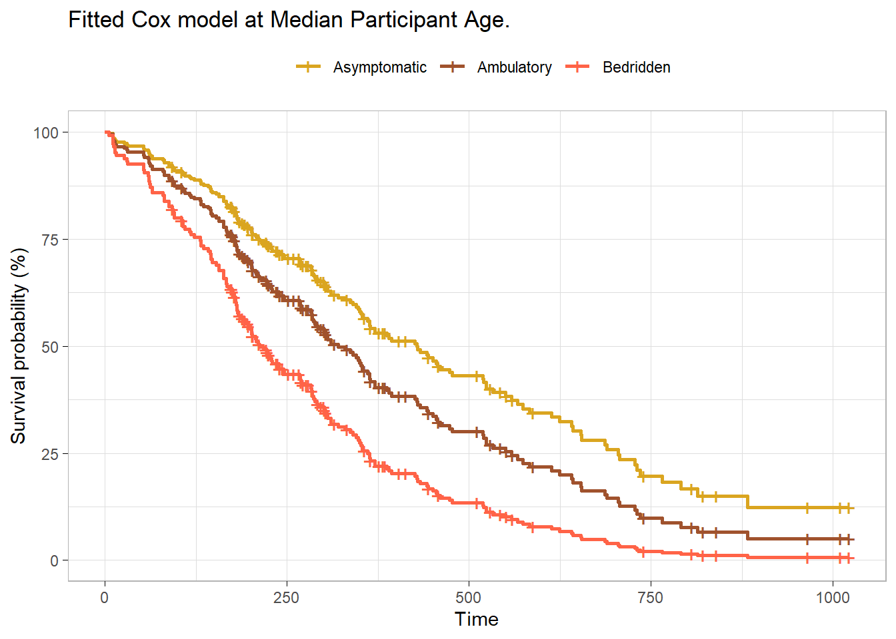
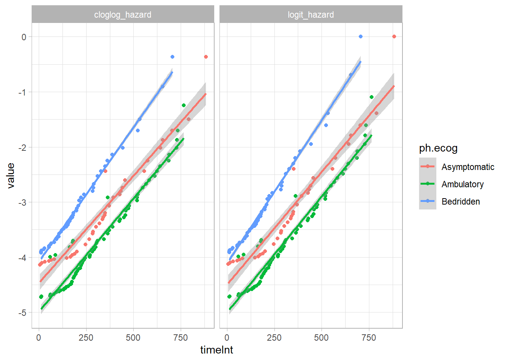

library(tidyverse)
library(survival)
library(survminer)
library(gtsummary)
library(scales)7 Case Study
The guidelines for reporting the Kaplan-Meier test are from Laerd’s Kaplan-Meier using SPSS Statistics (Laerd 2015). The data is from survival::lung.
d_lung <- survival::lung %>%
filter(!is.na(ph.ecog)) %>%
mutate(
ph.ecog = factor(
ph.ecog,
levels = c(0, 1, 2, 3, 4),
labels = c("Asymptomatic", "Ambulatory", "In bed <50%", "In bed >50%", "Bedridden")),
ph.ecog = fct_drop(ph.ecog),
ph.ecog = fct_lump_n(ph.ecog, n = 2, other_level = "Bedridden"),
patient_id = row_number()
)A study investigated differences in all-cause mortality between men and women diagnosed with advanced lung cancer. 227 participants aged 39 to 82 were monitored up to three years until time of death. The participants were segmented into three groups according to their ECOG performance score: asymptomatic, symptomatic but completely ambulatory, and bedridden at least part of the day. Participant age was captured as a controlling covariate.
(t1 <- d_lung %>%
mutate(status = factor(status, levels = c(1, 2), labels = c("censored", "died"))) %>%
tbl_summary(by = "ph.ecog", include = c(time, status, ph.ecog, age)) %>%
add_overall())| Characteristic | Overall N = 2271 |
Asymptomatic N = 631 |
Ambulatory N = 1131 |
Bedridden N = 511 |
|---|---|---|---|---|
| time | 259 (167, 404) | 303 (224, 442) | 243 (177, 426) | 180 (95, 310) |
| status | ||||
| censored | 63 (28%) | 26 (41%) | 31 (27%) | 6 (12%) |
| died | 164 (72%) | 37 (59%) | 82 (73%) | 45 (88%) |
| age | 63 (56, 69) | 61 (56, 68) | 63 (55, 68) | 68 (60, 73) |
| 1 Median (Q1, Q3); n (%) | ||||
7.1 Cox
The Cox proportional hazards model describes the effect of explanatory variables on survival and can include controlling variables. Add age as a controlling variable.
cox_fit <- coxph(Surv(time, status) ~ ph.ecog + age, data = d_lung)
(cox_tbl <- cox_fit %>% gtsummary::tbl_regression(exponentiate = TRUE))| Characteristic | HR1 | 95% CI1 | p-value |
|---|---|---|---|
| ph.ecog | |||
| Asymptomatic | — | — | |
| Ambulatory | 1.43 | 0.97, 2.11 | 0.072 |
| Bedridden | 2.39 | 1.52, 3.74 | <0.001 |
| age | 1.01 | 0.99, 1.03 | 0.2 |
| 1 HR = Hazard Ratio, CI = Confidence Interval | |||
Using a Cox proportional hazards regression analysis, we find the association between ECOG and survival time statistically significant with a Bedridden estimate of 2.39 (95% CI 1.52, 3.74; p<0.001) relative to Asymptomatic. The hazard ratio for Ambulatory was not statistically significant, 1.43 (95% CI 0.97, 2.11; p=0.072).
survfit(cox_fit, newdata = list(ph.ecog = levels(d_lung$ph.ecog),
age = rep(median(d_lung$age), 3)), data = d_lung) %>%
surv_summary() %>%
ggsurvplot_df(
fun = "pct",
# linetype = "strata", # Change line type by groups
# conf.int = TRUE,
surv.median.line = "hv", # median horizontal and vertical ref lines
ggtheme = theme_light(),
palette = c("goldenrod", "sienna", "tomato"),
title = "Fitted Cox model at Median Participant Age.",
legend.title = "",
legend.labs = levels(d_lung$ph.ecog)
)
7.2 Discrete Time
To fit a discrete time model, first create a discrete time data set, on record per relevant time period. You could do this by hand with expand.grid()
cs_glm_dat <- expand.grid(
time = seq(min(d_lung$time), max(d_lung$time), 1),
patient_id = unique(d_lung$patient_id)
) %>%
inner_join(d_lung, by = "patient_id") %>%
filter(time.x <= time.y) %>%
mutate(status = if_else(time.x < time.y, 0, status - 1)) %>%
rename(time = time.x)But discSurv::dataLong does this for you.
cs_glm_dat <- d_lung %>%
mutate(status = status - 1) %>%
discSurv::dataLong("time", "status", timeAsFactor = FALSE)For example, patient 1 died at time 306, so they have 306 rows in the new data set, with y = 0 for all but the last row.
cs_glm_dat %>% filter(obj == 1) %>% tail() obj timeInt y inst time status age sex ph.ecog ph.karno pat.karno
1.300 1 301 0 3 306 1 74 1 Ambulatory 90 100
1.301 1 302 0 3 306 1 74 1 Ambulatory 90 100
1.302 1 303 0 3 306 1 74 1 Ambulatory 90 100
1.303 1 304 0 3 306 1 74 1 Ambulatory 90 100
1.304 1 305 0 3 306 1 74 1 Ambulatory 90 100
1.305 1 306 1 3 306 1 74 1 Ambulatory 90 100
meal.cal wt.loss patient_id
1.300 1175 NA 1
1.301 1175 NA 1
1.302 1175 NA 1
1.303 1175 NA 1
1.304 1175 NA 1
1.305 1175 NA 1glm() fits either the log(-log(1-hazard)) or log(hazard / (1-hazard)) as a function of time, controlling for ph.ecog and age. The two links are similar here1.
cs_glm_dat %>%
group_by(ph.ecog, timeInt) %>%
summarise(.groups = "drop", died = sum(y), at_risk = n()) %>%
mutate(
hazard = died / at_risk,
logit_hazard = log(hazard / (1 - hazard)),
cloglog_hazard = log(-log(1 - hazard))
) %>%
pivot_longer(cols = c(logit_hazard, cloglog_hazard)) %>%
filter(!hazard %in% c(0, 1)) %>%
ggplot(aes(x = timeInt, y = value, color = ph.ecog)) +
geom_point() +
geom_smooth(method = "lm", formula = "y ~ x") +
facet_wrap(facets = vars(name)) +
theme_light()
logit_fit <- glm(
y ~ timeInt + ph.ecog + age,
data = cs_glm_dat,
family = binomial(link = "logit")
)
(logit_tbl <- logit_fit %>% gtsummary::tbl_regression(exponentiate = TRUE))| Characteristic | OR1 | 95% CI1 | p-value |
|---|---|---|---|
| timeInt | 1.00 | 1.00, 1.00 | <0.001 |
| ph.ecog | |||
| Asymptomatic | — | — | |
| Ambulatory | 1.42 | 0.97, 2.11 | 0.081 |
| Bedridden | 2.38 | 1.52, 3.76 | <0.001 |
| age | 1.01 | 0.99, 1.03 | 0.3 |
| 1 OR = Odds Ratio, CI = Confidence Interval | |||
Using a discrete time logistic regression analysis with logit link function, we find the association between ECOG and survival time statistically significant with a Bedridden estimate of 2.38 (95% CI 1.52, 3.76; p<0.001) relative to Asymptomatic. The hazard odds ratio for Ambulatory was not statistically significant, 1.42 (95% CI 0.97, 2.11; p=0.081).
cloglog_fit <- glm(
y ~ timeInt + ph.ecog + age,
data = cs_glm_dat,
family = binomial(link = "cloglog")
)
(cloglog_tbl <- cloglog_fit %>% gtsummary::tbl_regression(exponentiate = TRUE))| Characteristic | HR1 | 95% CI1 | p-value |
|---|---|---|---|
| timeInt | 1.00 | 1.00, 1.00 | <0.001 |
| ph.ecog | |||
| Asymptomatic | — | — | |
| Ambulatory | 1.41 | 0.97, 2.11 | 0.081 |
| Bedridden | 2.38 | 1.52, 3.75 | <0.001 |
| age | 1.01 | 0.99, 1.03 | 0.3 |
| 1 HR = Hazard Ratio, CI = Confidence Interval | |||
Using a discrete time logistic regression analysis with complementary log-log link function, we find the association between ECOG and survival time statistically significant with a Bedridden estimate of 2.38 (95% CI 1.52, 3.75; p<0.001) relative to Asymptomatic. The hazard ratio for Ambulatory was not statistically significant, 1.41 (95% CI 0.97, 2.11; p=0.081).
7.3 Reporting
The reporting below uses the Cox model rather than the discrete time model.
Participants were randomly assigned to three different interventions in order to quit smoking: a hypnotherapy programme (n = 50), wearing nicotine patches (n = 50) and using e-cigarettes (n = 50). Kaplan-Meier survival analysis (Kaplan & Meier, 1958) was conducted to compare the three different interventions for their effectiveness in preventing smoking resumption. A similar percentage of censored cases was present in the hypnotherapy (12.0%), nicotine patch (14.0%) and e-cigarette (14.0%) intervention groups and the pattern of censoring was similar. Participants that underwent the hypnotherapy programme had a median time to smoking resumption of 69.0 (95% CI, 45.2 to 92.8) days. This was longer than the groups receiving nicotine patches or e-cigarettes, which had identical median times to smoking resumption of 9.0 (95% CI, 6.6 to 11.4) days and 9.0 (95% CI, 7.1 to 10.9) days, respectively. A log rank test was conducted to determine if there were differences in the survival distributions for the different types of intervention. The survival distributions for the three interventions were statistically significantly different, χ2(2) = 25.818, p < .0005. Pairwise log rank comparisons were conducted to determine which intervention groups had different survival distributions. A Bonferroni correction was made with statistical significance accepted at the p < .0167 level. There was a statistically significant difference in survival distributions for the hypnotherapy vs nicotine patch intervention, χ2(1) = 11.035, p = .001, and hypnotherapy vs e-cigarette intervention, χ2(1) = 29.003, p < .0005. However, the survival distributions for the e-cigarette and nicotine patch interventions were not statistically significantly different, χ2(1) = 1.541, p = .214.
Full discussion on Rens van de Schoot.↩︎